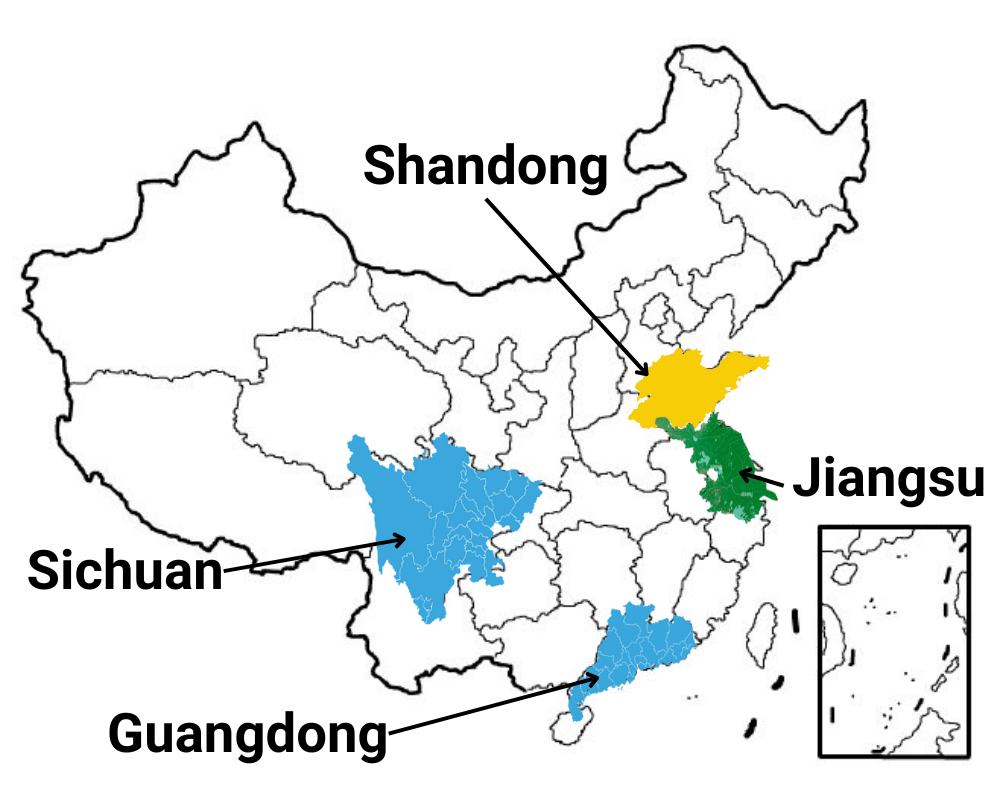

China’s culinary heritage is vast and diverse, but four regions stand out for their historical significance, unique flavors, and influence on global cuisine. Shandong (鲁菜), Sichuan (川菜), Jiangsu (苏菜), and Guangdong (粤菜) each bring distinct cooking styles, ingredients, and traditions that have shaped Chinese gastronomy for centuries. From the bold and spicy flavors of Sichuan to the refined elegance of Jiangsu, these regional cuisines showcase the richness of China’s food culture. At White Lotus Café, we honor these traditions by curating a menu that brings you the very best from each region.
At White Lotus Café, we’ve chosen these four culinary regions because they represent the breadth and depth of Chinese cuisine. Whether it’s the bold flavors of Sichuan, the refined elegance of Jiangsu, the hearty traditions of Shandong, or the fresh simplicity of Guangdong, our menu is designed to take you on a journey through China’s rich culinary history. Join us at White Lotus Café and experience the essence of China—one region, one dish, and one unforgettable bite at a time.
One of China’s oldest and most influential culinary traditions, Shandong cuisine is known for its bold, savory flavors, fresh seafood, and rich broths. Originating from northern China, it was the preferred cuisine of imperial courts and features dishes that highlight crisp textures and aromatic seasonings.
Signature Dishes & Drinks Include:
These dishes and drinks emphasize the freshness and umami that this region has to offer, and so much more.
Sichuan cuisine is famous for its bold, spicy, and numbing flavors, thanks to the use of Sichuan peppercorns and chili peppers. The region’s humid climate has influenced its preference for preserved and fermented ingredients, creating a complex, aromatic cuisine.
Signature Dishes & Drinks Include:
At White Lotus Café, we bring this fire and depth to life, ensuring every bite is a balance of heat and savory richness.
Refined and delicate, Jiangsu cuisine is characterized by light, subtly sweet flavors, slow cooking techniques, and artistic presentation. Once favored by Chinese royalty, this style of cooking emphasizes high-quality ingredients and meticulous preparation.
Signature Dishes & Drinks Include:
These dishes show the inticate craftsmanship and attention to detail of this sophisticated cuisine.
Cantonese cuisine is renowned for its fresh ingredients, mild seasonings, and expert steaming and roasting techniques. A global favorite, it focuses on preserving the natural flavors of food while adding a touch of sweetness and umami.
Signature Dishes & Drinks Include:
Our menu features these classics, bringing the comforting yet refined taste of Guangdong to your table.